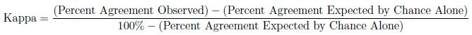

Cohen's Kappa
Cohen's Kappa stastistic is a measure of the inter-rater agreement. This statistic is to be used in situations when there are only two raters and the categorical variable being measured is nominal. Cohen's Kappa takes into account the fact that even if two observers use completely different criteria to classify subjects we would expect the observers to agree merely by chance. Thus Cohen's Kappa statistic is a measure of the extent to which the raters agree beyond what we expect by chance alone.

Landis and Koch suggested that a kappa less than 0.40 represents poor agreement, between 0.40 and 0.75 intermediate to good agreement, and above 0.75 represents excellent agreement beyond chance.
-- ErinEsp - 25 Jul 2010